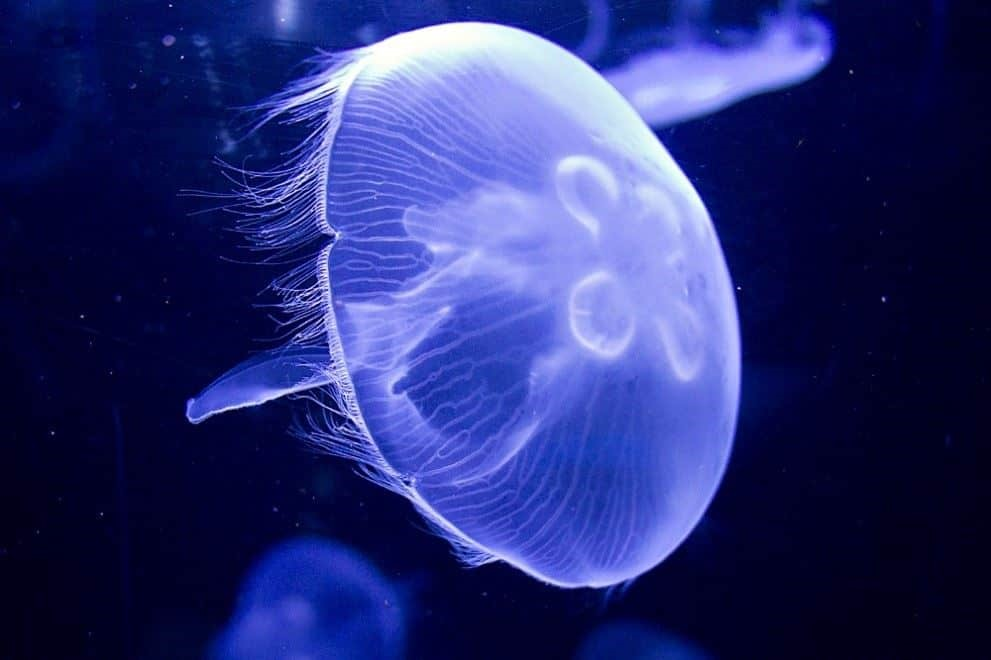
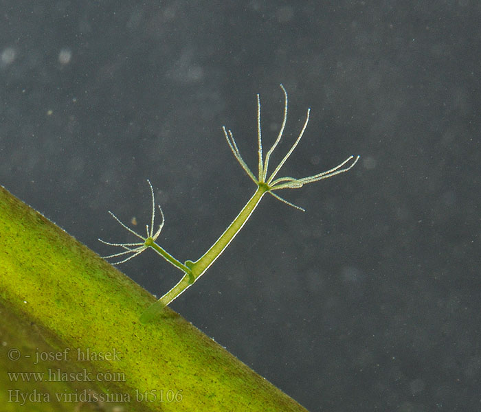

Meduzy są formmi wolnożyjącymi, o otworze gębowym otoczonym ruchliwymi płatami gębowymi.
Ich czułki są krótkie i wyrastają z brzegów ciała.
Posiadają grubą warstwę mezoglei.
Meduzy są najczęściej formami krótkotrwałymi co oznacza, że żyją najczęściej kilka miesięcy. Rozmnażają się one najczęściej płciowo. Ich gamety powstają z komórek interstycjalnych znajdujących się w gonadach.
Polipy są zwykle formami wolnożyjącymi, które są przytwierdzone do podłoża za pomocą stopy.Ich otwór gębowy jest otoczony wieńcem ruchliwych czułków, które ułatwiają zdobywanie pokarmu.
Mają one cieńką warstwę mezoglei.
Polipy są najczęściej formą długowieczną. Mogą żyć nawet kilkadziesiąt lat.Rozmnażają się zazwyczaj bezpłciowo poprzez pączkowanie lub strobilizację.
